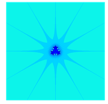
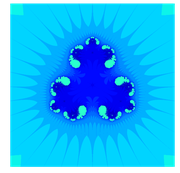

Créer une animation en Python
Contents
Tu sais que tu peux créer des animations en Python, Biwane ? Le module matplotlib contient ce qu'il faut. Par exemple, voici un petit film pour générer la génèse du (coeur du) radiolaire d'ordre 3 à 12 branches, et sa "dégénerescence" vers un coeur de radiolaire d'ordre 4. Tu ne sais pas ce qu'est un radiolaire ? Aucune importance, voilà le résultat :
Le radiolaire est le biomorphe de Pickover généré par la fonction \(p_3\) donnée par :
On l'appelle ainsi car la figure générée évoque un radiolaire. Voici une image d'un radiolaire dans la vraie vie :
{kind=link}
Le radiolaire généré par la fonction \(p_3\) :
{kind=link}
et enfin, un zoom sur son coeur :
{kind=link}
Ce billet permet de savoir comment générer ces images. Ensuite, le principe de l'animation est de créer une suite d'images et de les faire défiler : c'est littéralement un feuilleton qu'on produit.
Je crée mon feuilleton en faisant défiler les images correspondant aux fonctions :
Ainsi, je fais varier l'exposant de \(z\) [1] . Maintenant, passons donc à la pratique :
Importation des modules utiles
import numpy as np import matplotlib.pyplot as plt # celui-là pour générer les feuilletons import matplotlib.animation as animation
Pythonisation de la fonction \(p_t\)
# Construction de la fonction def p(t,z): return z**(t)+0.5
Fonctions utiles
Voici deux fonctions. La première, \(\texttt{dureeDeVie}\), est celle qui permet de déterminer de quelle couleur colorier un point \(u\) du plan complexe en déterminant son caractère vis-à-vis de la fonction \(p_t\).
La seconde, \(\texttt{coloriage}\), réalise le coloriage des points et génère donc une image (qu'on va appeler une page, c'est-à-dire un feuillet du feuilleton). Il ne restera plus qu'à assembler les feuillets du feuilleton pour fabriquer l'animation.
def dureeDeVie(t,u): """ u : un complexe r : un entier retourne le plus petit rang n inférieur ou égal à 10 pour lequel la partie réelle et la partie imaginaire excèdent 10 strictement en valeur absolue pour la suite récurrente de premier terme u et associée à la fonction p(t,z) Si cet entier n'existe pas, on le pose égal à 0. """ z = u # on peut faire les deux d'un coup : z,k = u,0 k = 0 while k<= 10 and (abs(z.imag)<=10 or abs(z.real)<=10): z= p(t,z) k+=1 if k==11: return 0 else: return k
def coloriage(r, xmin, xmax, ymin, ymax, nx,ny): """ je n'explique pas pour le moment ... """ X = np.linspace(xmin,xmax,nx) # je crée les subdivisons le long des X Y = np.linspace(ymax,ymin,ny) # idem le long des Y A = np.zeros((ny,nx)) # J'initialise un tableau de taille ny x nx for i in range(0,ny): for j in range(0,nx): A[i,j]= dureeDeVie(r,X[i]+1j*Y[j]) # je place en position [i,j] du tableau la durée de vie du germe A=12-A # Comme je veux colorier dans des teintes de bleu, je fais des A[0,0]=0 # petites transformations sur les coefficients de A A[1,1]=30 return A
Construction du feuilleton
xmin,xmax,ymin,ymax = [-2,2,-2,2] # domaine où se situe le coeur du radiolaire nx = 500 # résolution : grille de 500 X 500 points ny = 500 fig = plt.figure(figsize=(20,20)) # J'initialise le graphique ims = [] # ma liste d'images est vide au départ # ims est une liste de listes, ces listes étant des listes d'artists à dessiner dans # frame courant. Ici, la liste a un seul élément par frame : l'image. # artists : types d'objet python animable # frame : la page du feuilleton N = 300 for k in range(0,N): r = 1+0.01*k A = coloriage(r, xmin, xmax, ymin, ymax, nx,ny) im = plt.imshow(A, animated=True) ims.append([im]) # J'ajoute mon image à ma liste print("génération de l'image {}/{}".format(k,N)) print "Construction du feuilleton... (patience)" ani = animation.ArtistAnimation(fig, ims, interval=100, blit=True, repeat_delay=1500) ani.save('radiolaire.mp4') print('fin')
| [1] | Tu te demandes peut-être (et à juste titre) ce que peut bien siginifier par exemple \(z^{\sqrt{2}}\) quand \(z\) n'est pas un nombre réel ? Tu as bien raison ! Sinon tu as encore des problèmes de typo-déficience. Néanmoins, pour l'objet de ce billet, c'est sans importance ! |